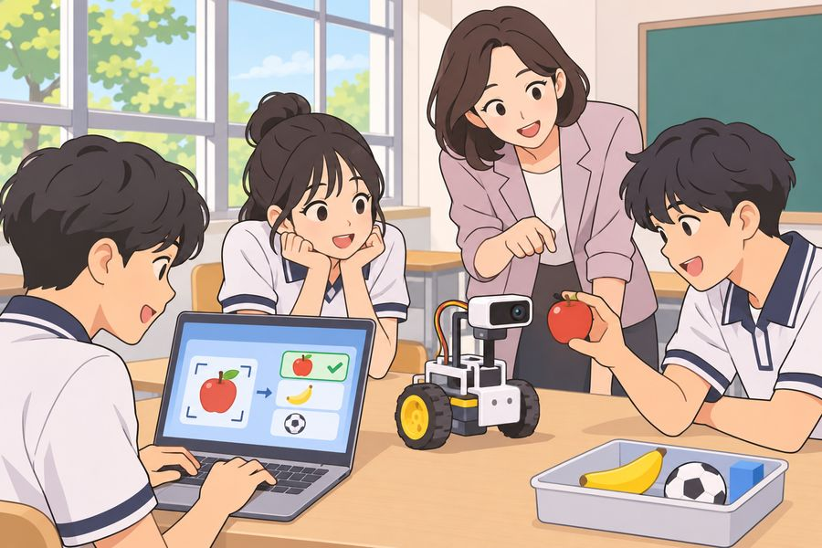

인공지능 기초, 함께 배워볼까요?
생활 속 인공지능을 이해하고 직접 체험하는 수업입니다.
📘 과목 소개
- 인공지능의 기본 원리를 배웁니다.
- 데이터를 활용하고 인공지능으로 문제를 해결하는 방법을 알아봅니다.
💡 수업 활동 미리보기
- 생활 속 인공지능 사례 찾기
- 간단한 인공지능 모델 만들기
- 인공지능을 활용한 프로젝트 진행하기



🙋 이런 학생에게 추천해요
- 인공지능과 새로운 기술이 궁금한 학생
- 직접 만들고 체험하는 활동을 좋아하는 학생
- 기술을 활용해 문제를 해결해보고 싶은 학생
📌 수강 전 알아두기
- 코딩을 처음 접하는 학생도 참여할 수 있습니다.
- 실습과 프로젝트 중심으로 수업합니다.
- 평가 방법은 수업 시작 시 안내합니다.